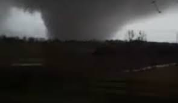

Tornado Activity and Climate Change. Are They Connected?
By Jacob Bernardini December 10th, 2021. A large intense tornado touched down in Western Kentucky and caused massive damage in multiple towns. The death toll from this disaster is still unknown and relief is still underway in the Bluegrass state. However, tornadoes like this are highly unusual, especially in December.
While the official cause for tornado formation is still unknown by meteorologists, the consensus to produce a storm system that can is widely agreed upon. These systems, called supercells, are caused by a layer of warm humid air moving in a direction, and cold dry air moving in the opposite direction. This difference in temperature and air pressure causes circulation.
With more and more irregular tornado outbreaks in the United States. Climate change is often in the center of the discussion on why this is happening. But how does climate change contribute to these changes? How does it correlate to tornadoes? The answer to this question is just like a tornado. Unpredictable.
Tornadoes are becoming more common, but are still quite random
While tornadoes have been gradually increasing. The number of tornadoes per year, varies wildly. For instance, 2012 had less than one thousand tornadoes recorded that year. While the year before, 2011, was a one of the most active tornado seasons on record. This variation also applies to tornado strength. With the amount of F3 and above tornadoes varying wildly by year.
The reason for this is has to do with weather patterns in the region. In contrast with hurricanes, tornadoes also are impacted by these patterns. More specifically the La Nina weather pattern. Which has been linked to a higher frequency of tornadoes in the spring according to NOAA.
Disparities in the number of severe tornadoes also deals with the evolution of tornado coverage. Tornadoes today are ranked using the Enhanced Fujita scale, however before 2007, the Fujita scale was used.
“Changes in tornadic path characteristics across the F–EF divide, and the apparent influence of updated tornado survey practices either mask or complicate the identification of more-subtle climatic signals” says Roger Edwards, a meteorologist from the National Weather Service in a report published in October. “This poses a substantial handicap for attempts to determine relationships (if any) between climatic change and indicators of tornado strength.”
Despite these facts, it is important to note that tornadoes, generally, are still increasing. Not just in Tornado Alley, but in the entire continental United States. Furthermore, the time of year in which tornadoes occur is also becoming more random. With tornadoes becoming more frequent outside of the peak tornado season in the spring.
“As the air masses on the planet and the different wind pattern warm and change and expand. The jet streams start to swing more wildly.” said Daniel Curewitz, professor of Earth and Environmental Sciences at Syracuse University. “And the swinging of the jet streams is bringing different air masses into different regions in a more extreme fashion.”
The change of the jet streams is causing a wide array of changes in weather, most famous being the polar vortex in the Northeast and Midwest. This destabilizing of the jet streams brings different air masses togethers and causes tornadic activity more frequently outside of Tornado Alley
Tornado Alley is expanding eastward
Tornado alley is a defined area in the central United States where tornadoes are more likely to form. The most prominent states in this region are Oklahoma, Kansas, Texas, and Nebraska. However, recently while tornado alley is still the area with the highest number of tornadoes, more states in the eastern part of the United States are beginning to experience a high amount of tornadic activity.
The most famous of these new regions is Dixie Alley, the nickname given to the areas of the southern United States that are vulnerable to tornadoes. The most famous being the 2011 tornado super outbreak. Which produced over a dozen strong and violent tornadoes in states such as Mississippi, Alabama, and Georgia.
As of recent the frequency of tornadoes outside of the traditional tornado alley has steadily increased. Not just in the deep south, but in places such as Ohio, Kentucky, and even central New York. The reasoning for this once again goes back to the changing of the climate and the instability of weather patterns.
“As the climate changes and those jet streams, weather patterns, and air masses become less and less predictably stable.” Daniel Curewitz said. “You are going to get more and more of those moments when all of a sudden, the conditions are ripe for a series of tornadoes to spawn in the region from central New York to central Maine, and this is happening more frequently.”
There are multiple theories on what could happen in the future due to climate change. With some meteorologists believing that tornado alley will expand eastward and strengthen in intensity. Other meteorologists believe that tornado alley will simply shift eastward. While some simply believe that it will be chaos and predictability will be out the window. Whatever the future holds its surely to be unpredictable.
“What we’re measuring now is that things are changing fast and that we can expect more tornado like behavior and regions that aren’t used to it.” Curewitz said.